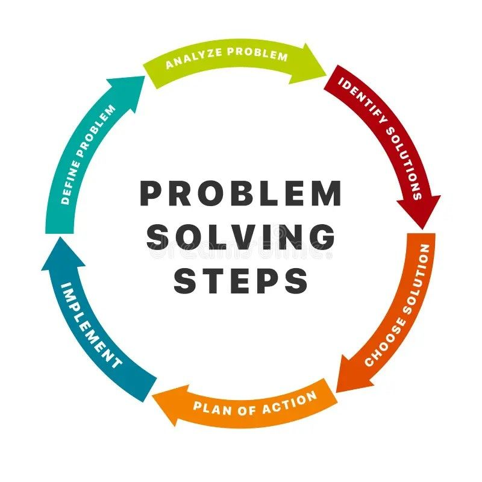

Ik ben Bisessar Sailesh, een full-stack webdeveloper uit Suriname met een sterke interesse in techniek en digitale oplossingen. Mijn nieuwsgierigheid naar hoe systemen werken bracht mij al vroeg in aanraking met ICT, en die interesse groeide uit tot een echte passie voor het bouwen van websites en webapplicaties.
Momenteel werk ik als ICT Medewerker bij het Korps Politie Suriname, waar ik dagelijks te maken heb met hardware, software, netwerken en gebruikersondersteuning. Naast mijn werk ontwikkel ik mezelf continu op het gebied van webdevelopment: van front-end design tot back-end architectuur en databasebeheer.
Wat mij drijft is het vertalen van een idee naar een werkende, gebruiksvriendelijke oplossing. Ik hou ervan om functionaliteit en vormgeving met elkaar te combineren, zodat een applicatie niet alleen goed werkt, maar ook prettig aanvoelt om te gebruiken.
Nieuwe frameworks, libraries en technieken uitproberen en toepassen in eigen projecten.
Interfaces ontwerpen die er niet alleen goed uitzien, maar vooral intuïtief aanvoelen.

Technische puzzels analyseren en stap voor stap tot een werkende oplossing komen.
Cursussen, documentatie en tutorials volgen om mijn kennis constant up-to-date te houden.